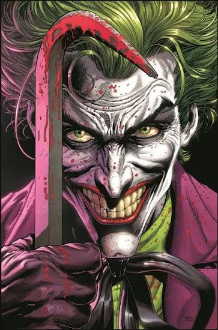

Tragedia. Atras  El Joker es uno de los villanos más icónicos del cómic, creado por Bill Finger, Bob Kane y Jerry Robinson en Batman #1 (1940). No tiene un nombre ni origen definitivo en el canon principal, pues su propia mente reescribe su pasado constantemente. La versión más aceptada lo retrata como un comediante fracasado que, tras perder a su esposa embarazada en un accidente y verse obligado a participar en un robo en la planta Ace Chemicals, cae a un tanque de residuos tóxicos huyendo de Batman. Los químicos blanquean su piel, tiñen su cabello de verde y tuercen sus labios en una sonrisa permanente, lo que sumado a sus tragedias destruye su cordura por completo. Su conflicto con Batman representa el choque entre el caos absoluto y el orden. Más que buscar dinero o poder, el Joker vive obsesionado con demostrar su teoría de que cualquier persona justa puede volverse loca tras sufrir "un mal día". Sabiendo que el Caballero de la Noche se rige por la regla de no matar, su mayor meta es llevarlo al límite para que rompa esa norma. A lo largo de los años ha marcado la vida de Batman provocando enormes tragedias, como dejar parapléjica a Barbara Gordon, asesinar al segundo Robin (Jason Todd) y manipular a la psiquiatra Harleen Quinzel para convertirla en Harley Quinn. Su intelecto criminal, su dominio de toxinas como el Veneno Joker y su mente impredecible lo convierten en la némesis definitiva de Ciudad Gótica.